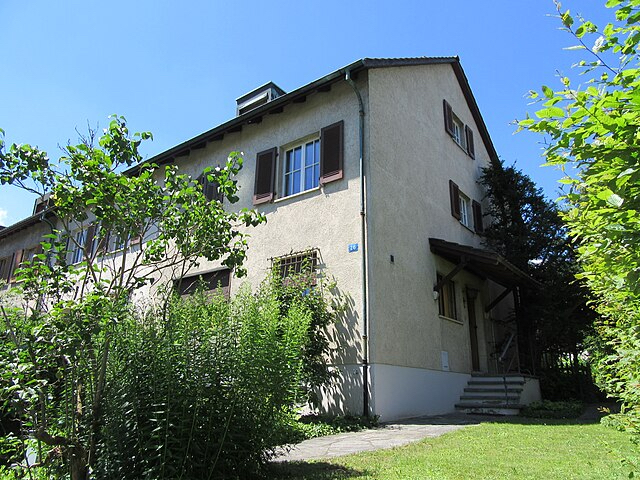

David Plüss zum 60. Geburtstag
Die Adresse «Basel - Bruderholzallee 26» steht für die Abschlussphase eines der grössten theologischen Denkabenteuers des 20. Jahrhundert. Karl Barth (1886–1968) hat dieses Haus zusammen mit Nelly Barth (1893–1976) und Charlotte von Kirschbaum (1899–1975) vom Jahr 1955 bis zu seinem Tod im Jahre 1968 bewohnt. Der schwäbische Dichterpfarrer Albrecht Goes (1908–2000) hat Karl Barth während dieser Zeit besucht. In einer kleinen Reminiszenz hat er diesen Besuch festgehalten und auch die Bescheidenheit dieses Wohnsitzes hervorgehoben. Und ausdrücklich stellt Goes fest: Kein württembergischer Bürgermeister auch nur eines kleinen Städtleins würde sich mit so einer bescheidenen Wohnstatt begnügen.
Aussenansicht Bruderholzallee 26. (Foto: © Karl-Barth-Archiv, Universität Basel)
Dieses grosse theologische Denkabenteuer beginnt an einem ganz anderen
Ort. Nämlich im Pfarrgarten des aargauischen Dorfes Safenwil unter einem
Apfelbaum. Dabei sind wir bereits bei einem nicht unwichtigen Detail
unseres theologischen Jahrhundertabenteuers. Karl Barth war zeitlebens
ein grandioser Vermarkter seiner eigenen Theologie. Dies teilte er mit
so heterogenen Denkern der frühen Weimarer Republik wie Georg Lukács
(1885–1971) und Carl Schmitt (1888–1985).
Wie dem auch sei, ob es nun den Apfelbaum so gegeben hat oder nicht, auf
jeden Fall entsteht in der Zeit des Safenwiler Pfarramts Barths
Kommentar zum Römerbrief, in dem dieser ein ganzes theologisches
Jahrhundert herausgefordert hat: Nämlich den Neuprotestantismus, der bei
Friedrich Schleiermacher (1768–1834) seinen Anfang nahm und über
Albrecht Ritschl (1822–1889) bis hin zu Barths Zeitgenossen Adolf von
Harnack (1851–1930) ging, der zugleich Präsident einer der angesehensten
wissenschaftlichen Akademien der damaligen wissenschaftlichen Welt war.
Stellte der Neuprotestantismus die religiöse Persönlichkeit in den
Mittelpunkt des theologischen Nachdenkens, so sah Barth gerade diese
religiöse Persönlichkeit in den tödlichen Materialschlachten des Ersten
Weltkriegs buchstäblich «verenden». Diesem sterbenden Subjekt stellt
Barth nun Gott als den «ganz Anderen» gegenüber, der in einem
unüberbrückbaren Gegensatz zum religiösen Menschen der Theologie des 19.
Jahrhunderts steht. In eindrücklichen Metaphern hämmert Barth diesen
Gegensatz seinen Zeitgenossen ein: Vom «Einschlagstrichter» ist da die
Rede, von einer «Tangente», die aber «den Kreis nicht berührt», vom
«Hohlraum» des Glaubens, um nur einige Beispiele zu nennen.
Arbeitszimmer Bruderholzallee 26. (Foto: © Karl-Barth-Archiv, Universität Basel)
Von Safenwil über Göttingen nach Basel in bewegten Zeiten
Eigentlich hätte die wissenschaftliche theologische Welt diesen rabiaten
Pfarrer in Safenwil unter seinem Apfelbaum sitzen lassen und weiter
ihrer Tagesordnung folgen können. Aber das Gegenteil geschah: Karl Barth
wird wahrgenommen. Agnes von Zahn-Harnack (1884–1950), die Tochter Adolf
von Harnacks, berichtet, dass ihr Vater bereits im Jahre 1920 einen
Vortrag Karl Barths aufmerksam zur Kenntnis genommen habe. Doch da war
«nicht ein Satz, nicht ein Gedanke, den er mitdenken konnte» – so die
Tochter. Und von Harnack nimmt den Fehdehandschuh auf, den der Schweizer
Dorfpfarrer ihm vor die Füsse geworfen hatte. Zu Beginn des Jahres 1923
hat von Harnack in der damals einflussreichen und angesehenen
Zeitschrift «Die christliche Welt» einen kleinen Text veröffentlicht mit
dem Titel «Fünfzehn Fragen an die Verächter der wissenschaftlichen
Theologie unter den Theologen». Und es war klar - der primäre, wenn
nicht einzige Adressat dieser Fragen war Karl Barth. Und dieser
antwortet. Bereits im Februar 1923 erscheint in derselben Zeitschrift
ein Text Barths mit dem Titel «Fünfzehn Antworten an Herrn Professor von
Harnack». Zu dieser Zeit war Barth bereits seit zwei Jahren
Honorarprofessor für Reformierte Theologie an der Universität Göttingen.
Vielleicht spielte der Hintergedanke eine Rolle, ihn in die Zunft zu
berufen, damit er sich dort die Hörner abstossen wird.
Und ein wenig ist das Spiel auch aufgegangen. Aus dem wilden Dorfpfarrer
wurde ein disziplinierter Lehrer der Theologie, der pingelig seine
Vorlesungen und Seminare vorbereitete. Besonders ein Kollege hatte es
ihm offensichtlich angetan - Emanuel Hirsch (1888–1972). Es scheint,
dass er sich an ihm zeitlebens abgearbeitet hat. So sehr Barth ihn auch
theologisch bekämpfte - Hirsch bekannte sich später voll und ganz zum
Nationalsozialismus - dessen unbestreitbare Belesenheit und
Gelehrsamkeit war Barth wohl zeitlebens ein Stachel im Fleisch.
Und auch in der Form von Barths Theologie ist der Wandel abzulesen: Aus
dem eher an Expressionismus und Dadaismus orientierten Autor der
Römerbriefkommentare wurde der systematisierende Verfasser der
vielbändigen «Kirchlichen Dogmatik». Die ersten Bände der Kirchlichen
Dogmatik sind unverkennbar von einem starken Ordnungswillen
gekennzeichnet. Ob dieser Ordnungswille der Barthschen Theologie
förderlich war, bleibt zu fragen. Doch das ist mein unmassgebliches
Urteil.
Und dann kam wieder ein äusseres Ereignis, das dem theologischen
Denkabenteuer eine neue Wendung gab. Am 30. Januar 1933 wurde Adolf
Hitler (1889–1945) zum Reichskanzler ernannt, und die zerbrechliche
Weimarer Republik wurde innerhalb weniger Monate in eine inhumane
Diktatur verwandelt. Wiederum musste Barth sehen, dass auch – wie 1914 –
viele in Kirche und Theologie die neue Zeit bejubelten oder zumindest
mit gedämpfter Sympathie beobachteten. Das rief in Barth wieder den
wilden Löwen der Anfangsjahre wach. In einer Stilistik, die an die
Römerbriefkommentare erinnert, schloss er im Juni 1933 seine
Streitschrift «Theologische Existenz heute!» ab. Die Publikation gab der
gerade entstehenden «Bekennenden Kirche» wesentliche Impulse.
Und so ist es auch kein Zufall, dass die berühmte Barmer Theologische
Erklärung vom Mai 1934 Barth zu einem ihrer Autoren zählte. Auch hier
kommt Barths Drang zur Selbststilisierung wieder zum Vorschein.
Offensichtlich hielten die beiden lutherischen Vertreter im kleinen
Autoren-Komitee, Thomas Breit (1880–1966) und Hans Asmussen (1898–1968),
gerne Mittagsschlaf. Und so erzählte Barth später gerne, dass er den
«Schlaf der Lutheraner» genutzt habe, um der Barmer Theologischen
Erklärung seinen Stempel aufzudrücken. Ob es nun den Mittagsschlaf von
Breit und Asmussen gegeben hat oder nicht – auf jeden Fall trägt die
Barmer Theologische Erklärung in weiten Zügen die Handschrift Barths.
Karl Barth musste im Jahre 1935 Nazi-Deutschland verlassen und erhielt
eine Professur für Systematische Theologie und Homiletik an der
Theologischen Fakultät der Universität Basel, der er bis zu seinem Tod
treu blieb.
Karl Barth 1954. (Foto: © Karl-Barth-Archiv, Universität Basel)
Der kritische Zeitgenosse erzählt vom nahen Gott
Karl Barth blieb auch in Basel der kritische Zeitgenosse inmitten eines
brennenden Europas. Doch die «neutrale» Schweiz bot ihm auch den Raum,
an seinem Monumentalwerk der Kirchlichen Dogmatik weiterzuschreiben. Und
wiederum verändert sich der Schreibstil Karl Barths. Waren die ersten
Bände geprägt vom starken Willen nach Systematisierung und Ordnung, so
verfährt Barth in den 40er- und 50er-Jahren zunehmend narrativ. Aus der
Dogmatik wird langsam aber sicher eine Erzählung von Gott und seinen
Menschen.
Inszenierten die beiden Römerbriefkommentare Gott als
den «ganz Anderen», so entdeckt Barth jetzt die Metapher der
Partnerschaft zwischen Gott und den Menschen. Gott kommt uns – um eine
berühmte Formulierung Augustins aufzugreifen – so nahe, wie wir uns
selbst gar nicht nahe zu sein vermögen. Von dieser partnerschaftlichen
Nähe Gottes zu uns, so Karl Barth, erzählt die Bibel von der ersten bis
zur letzten Seite, und davon möchte auch die zu immer mehr Bänden
anschwellende Kirchliche Dogmatik erzählen.
Im September 1956 – also wenige Monate nach dem Einzug von Karl und
Nelly Barth und Charlotte von Kirschbaum in das unscheinbare
Reihenhäuschen Bruderholzallee 26 – hält Karl Barth in Aarau einen
Vortrag mit dem Titel «Die Menschlichkeit Gottes». Sehr kritisch blickt
Barth dabei auf seine theologischen Anfänge. Die Motive dazu seien auch
heute noch richtig, aber die Form dieser frühen Theologie sei doch wohl
selbst etwas «häretisierend» gewesen. Hätte der Neuprotestantismus den
Menschen auf Kosten Gottes gross gemacht, so habe die frühe Dialektische
Theologie doch wohl Gott auf Kosten des Menschen gross gemacht. Gottes
Freiheit – an der Barth in seinen theologischen Anfängen so viel gelegen
war – schliesse aber gerade seine Menschlichkeit ein. Gerade die
Göttlichkeit Gottes trage den «Charakter von Humanität».
Und so endet das für mich grösste theologische Denkabenteuer des 20.
Jahrhunderts in einem kleinen unscheinbaren Reihenhaus auf dem Basler
Bruderholz: Der Theologe, der einst auszog, seine damalige theologische
Welt mit seinen Metaphern-Kaskaden von Gott als dem «ganz Anderen» das
Fürchten zu lehren, wurde zu einem Erzähler vom nahen Gott, der uns
Menschen als Partnerinnen und Partner erwählt, um unsere Welt als Gottes
gute Schöpfung das sein zu lassen, «das allen in die Kindheit scheint
und worin noch niemand war: Heimat.» (Ernst Bloch).
Albrecht Grözinger war Ordinarius für Praktische Theologie an der Universität Basel.
Weitere Artikel von {{ author.author }} finden Sie hier:
Zur Vertiefung:
- Grözinger, Albrecht: Karl Barth: Der Römerbrief – 100 Jahre danach gelesen, PTh 108 (2019), 3–16.
- Tietz, Christine: Karl Barth. Ein Leben im Widerspruch, München 2018.
- Webseite des Karl-Barths-Archivs: www.karlbarth.unibas.ch (12.9.2024).